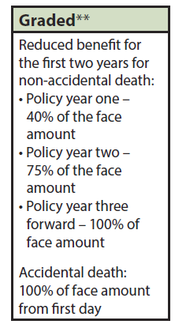
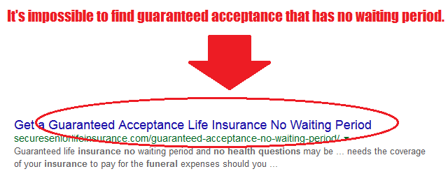

By pressing "See Quotes Now" you agree to our privacy policy and consent to have a Absolute Mutual Agents agent contact you by email, phone call, text/SMS message at the phone number & email you provide. You understand that any calls, texts, SMS messages may be made using automated dialing technology. Consent isn’t a condition to purchase our products.
To see some quotes for burial insurance with no waiting period, just use the quick quote tool on this page. You’ll instantly see prices from multiple companies in your state that offer immediate benefit policies.
Have you been trying to find a funeral insurance policy for seniors that protects you right away?
Here’s some good news: Getting a final expense policy that has no waiting period is possible!
So here’s what you’ll learn in this article…
We will explain how waiting periods work, and how to avoid them if possible.
Furthermore, we’ll outline exactly what health issues are not eligible for immediate coverage, and we’ll give you some clear cut advice on how you can put yourself in the best position possible to avoid a waiting period.
Burial insurance with no waiting period is a policy that will pay out the full death benefit starting from the very first day. Your beneficiary will receive 100% of the death benefit even if you’ve only made one payment on your policy. There are many final expense companies that offer coverage like this.
Want to know the best part?
" The majority of people looking for burial insurance can qualify for a policy that truly has no waiting period. "
Usually the question is… Which final expense company will accept all your health issues, and approve you for an immediate benefit policy?
To get the answer to that, you need to work with a broker that has access to all the major final expense life insurance companies (cough, cough, Absolute Mutual Agents 😎).
A agency like us that represents over 20 companies will evaluate your health to see which carriers have underwriting that will accept you health conditions, and not give you a waiting period.
Bottom line?
If there is a company out there that will issue you a policy with no waiting period, Absolute Mutual Agents will find it!
In this scenario, you are not subject to a full waiting period where your policy pays no death benefit during the first 24 months.Burial Insurance With No Waiting Period
Instead, your policy will pay out a portion of your death benefit. In most cases, burial insurance companies call these “Graded” plans.
The picture to the right is from a company that offers a graded plan.
Basically, the insurer would be willing to pay out 30%-40% of your death benefit if you pass away during the first 12 months. They would pay 70%-80% if death occurs during months 13-24.
After the 24 months is up, they’ll pay out 100% for life.
There are some health situations where the best a person can achieve is a plan like this that has a partial waiting period (we list all the health issues further down or you can click here).
To get funeral insurance with no waiting period you must apply with a company where you answer health questions on the application. Now you won’t need to go through a physical or medical exam, but you will have to answer questions about your health.
You need to be careful.
There are some websites that will flat out lie to your face. Take a look at this company below. They are willing to lie just to get you to click on their website.
Guaranteed acceptance life insurance is a term used to describe a policy that has no health questions or any medical underwriting. These kinds of policies always come with a 24 month waiting period.
That website is just one of many that is will willing deceive you just to earn a buck.
It’s important to understand what response final expense companies will have when you answer their health questions.
Keep this in mind…
" If an insurance company does not ask about a health issue, it means they are okay with it. "
The questions on an application are always broken up into sections. Depending on which one(s) you say yes to could mean any of the following (every carrier responds differently):
Here’s the bottom line
The surest path to immediate coverage is to find a company where you do not see them ask about any of your health issues on their application. Because they don’t ask about your issues, it means they are okay with them which means no waiting period.
But here’s the kicker…
Not everyone will be able to find an application that allows them to say no every question. This is the reality for certain high risk conditions.
Thankfully, there are some (not many) companies that do allow applicants to say yes to certain health questions, and still offer them full day one coverage.
Refer to the section in this article that details all the health issues where a full or partial waiting period is unavoidable. If you do not see your health issues on either of those lists, you can almost certainly secure a policy with no waiting period. 😀
With no waiting period, the insurance company is on the hook for a massive amount of risk. Remember, they must pay out 100% of your death benefit even if you only had your policy for 1 day.
In order for an insurance company to be willing to take that kind of immediate risk, they must know that you aren’t statistically going to die right away.
If they didn’t do this, they would go out of business in less than a year.
Here’s what would happen…
A bunch of folks on their death bed or with a very short life expectancy would make payments for only a short while. Then when they pass away, their family would collect a check for tens of thousands of dollars.
So the insurance company is out $10K-$30K, but they only collected a few hundred bucks. Not a winning proposition at all.
You don’t need to have a PHD in economics to know that is a losing business model. They would be flushing money down the drain left and right.
Unfortunately some health issues are so high risk that no burial insurance company is willing to take a chance by offering immediate coverage.
There are two lists below. One details all the health issues where you will unequivocally endure a full 24 month waiting period. The other details conditions where the best you can achieve is a partial waiting period (a graded plan).
If you deal with any of these conditions, you cannot avoid a two year waiting period.
If you have any of these conditions, a graded plan that partially covers you is the best you can achieve if your goal is protection that starts right away.
All your health issues combined is the final thing to consider that could determine whether or not you are eligible for funeral insurance with no waiting period.
Here’s the thing
Health conditions not listed in either of those two lists above are absolutely eligible for a no waiting period burial policy. However, certain health issue combinations not in those lists might mean the best you can do is a graded plan, or a full waiting period.
Here’s an example to illustrate what we mean
Mary is a 65 year old woman. She has diabetic neuropathy and she has cirrhosis of the liver.
We have companies that will offer a full day one benefit to someone who has neuropathy. We also have companies that will offer a full day one benefit to someone who has liver cirrhosis.
What doesn’t exist is a company that offers a full day one benefit for someone with neuropathy AND cirrhosis. Unfortunately, the companies that take neuropathy don’t take cirrhosis and vice versa.
Mary is going to have to endure a full 24 month waiting period unfortunately. Even a graded plan isn’t an option due to her specific health issues. 😞
So again, all your health issues combined could result in a full or partial waiting period.Burial Insurance With No Waiting Period
There’s no way we could ever post a list of all the possible health combinations that would dictate what you should expect.
There’s simply too many companies and too many variables. The list would be well over 100 pages long.
Whether you deal one or multiple health conditions, you must speak with an agent if you want any shot at senior life insurance with no waiting period.
This is why you don’t see immediate benefit final expense insurance sold in grocery stores. There’s too many variables to consider.
The only kind of burial life insurance that is sold direct to consumer (without the aid of an agent) is guaranteed issue which always carries a full 24 month waiting period.
Your agent will gather all the information about your health to determine what companies will offer you.
Remember
The vast majority of our (we can’t speak for other agencies) customers are able to secure a policy that offers them full day one coverage. Fortunately, there are tons of final expense companies out there with very lax underwriting.
Even for folks with multiple health conditions, we are usually able to find them a carrier that is accepting of all their issues which means an immediate benefit.
We’ve touched on this subject briefly earlier in this article, but we feel it’s important to be ultra clear on this topic.
One of the questions we get every day is: Can I get a no health question policy that has no waiting period?
Or people see the words “No Exam” and assume that means no questions about health.
Side Note: “No Exam” simply means that you don’t undergo a physical examination as part of the application. You simply answer questions about your health, and consent to a prescription history check.
Here’s the truth on this issue.
" All guaranteed issue life insurance plans have at least a 24 month waiting period before they will pay out a death benefit. "
No health question policies will merely refund all your premiums plus interest if you pass during the first 24 months of the policy.
You will often see these policies referred to as “guaranteed issue” or “guaranteed acceptance”. Some companies such as Metlife or Gerber Life, only sell this kind of final expense insurance.
They have no health questions or any medical underwriting of any kind. They truly do issue the policy to everyone who applies as long as they meet the age requirements.
Because the insurance companies know nothing about the applicants health, they must institute a 24 month waiting period to keep them from going out of business (in addition to higher premiums).
If they didn’t, people on their death bed would buy them and the insurance company would be out of business overnight.
If anyone tells you they have a no health question policy that has no waiting period (as shown earlier in this article), they are lying to you, so run!
Hopefully by now you realize that you’ll have to answer some questions about your health in order to qualify for final expense insurance no waiting period.
There are many variables to consider which is why we give this specific advice.
In a nutshell, to give yourself the best chance at securing whole life insurance with no waiting period policy, you have to evaluate options from multiple insurance companies.
If it’s medically possible for you to secure an immediate, you must do the following to find it…
Find an independent final expense agency that has the following qualification:
An agency with those qualities will evaluate your health so they can determine how each insurance company will respond to your specific situation.
Then they will let you know which companies, if any, that will offer you a senior life insurance with no waiting period. At that point, it’s just a matter of selecting which immediate benefit policy is least expensive, and getting qualified for it.
But wait, it gets better
The services of an agency are free. They get paid by the insurance companies which is why it doesn’t cost you anything.
Furthermore, your insurance doesn’t cost more because you bought through an agent.
You now know you have to work with an independent agency if you are truly going to give yourself the best shot at finding coverage that has no waiting period.
So here’s the bottom line
You will not find another agency that is better equipped to help you than we are. Here’s why we say that…
You can go looking for another agency that has these qualifications, but you won’t find it.
We operate in every state, so no matter where you are, we can help you.
Whether you are looking for burial insurance for your parents, or yourself, if you would like some expert & no pressure help finding a funeral policy with no waiting period, call us at 1-800-644-2926.

I’m a final expense & children's life insurance expert, official member of the Forbes Finance Council, and the Founder & CEO of Absolute Mutual Agents. I have been helping clients with final expense and child life insurance since 2010 and try hard to share with you the knowledge I’ve garnered after helping thousands of clients. Absolute Mutual Agents is an independent insurance agency licensed in all 50 U.S. states including D.C. We represent over 15 different insurance carriers on your behalf so we can find which one will approve you for the best policy. I started this company so people like you could finally get honest answers & advice from friendly agents who know this business inside and out.
6586 W Atlantic Avenue Ste
#1040 Delray Beach
FL 33446
888-534-0219
Monday – Friday
8 A.M. – 5 P.M. PST


Absolute Mutual Agents is a licensed independent insurance agency licensed to sell insurance in all 50 U.S. states including DC. Absolute Mutual Agents does not underwrite any insurance that appears on our website. Insurance quotes appearing on this website are non-binding. While we have done our best to ensure all rates shown are accurate; human error is a possibility. In the rare event we made a mistake regarding pricing, the carrier’s rates will always supersede whatever rate appears on our website.
Not all products are available in all states. Product eligibility for each carrier varies depending on the following factors: resident state of the insured, age, and medical underwriting restrictions. All plans with no waiting period require an applicant to be medically approved by the insuring company and are subject to the incontestability period. All guaranteed acceptance plans that have no health questions will be subject to the insurer’s defined waiting period before benefits become payable under the policy provisions.
Whole life final expense insurance available through Absolute Mutual Agents insurance agency may be underwritten by any of the following insurance companies: AIG, American Amicable, American Continental Life Insurance Company (Aetna), American Home Life, Americo, Assurity, Baltimore Life, Foresters Financial, Gerber Life, Great Western, Kemper, Liberty Bankers Life, United of Omaha (Mutual of Omaha), Pekin Life, Prosperity Life Group, Royal Neighbors of America, Sentinel Security Life, or Transamerica.
By submitting a quote or contact request through any of our contact or quote forms, you agree to Absolute Mutual Agents’s privacy policy. Furthermore, you also consent and expect to be contacted via text, email and phone by a licensed agent of Absolute Mutual Agents which may be may be conducted using automated dialing technology.
By submitting a request to apply for children’s whole life insurance from United of Omaha, you agree to our privacy policy and the terms of use. Furthermore, you certify that your answers in the application are true and complete. You also understand that inaccurate responses may void the application. You understand that the information you provide in the application will be sent directly to United of Omaha for processing. The company makes no guarantee your application will be issued. Coverage is subject to underwriting approval. By clicking the “Esign & Submit” button, you consent to being contacted via text, SMS message, phone, US mail, and email. You understand that calls, texts, and SMS messages may be delivered via automated dialing technology. Usually, it is unnecessary to contact you about your United of Omaha children’s whole life insurance application. However, if United of Omaha should require rectification of an underwriting requirement, only then will a Absolute Mutual Agents agent contact you to ensure your policy is approved and issued in a timely manner.
Under no circumstances will Absolute Mutual Agents share or sell your information with a third party without your consent.
No part of this website may be copied, published, faxed, mailed or distributed in any manner without the prior written consent from the website owner.
Copyright Absolute Mutual Agents © 2015-2020- All rights reserved
32 Comments
Robert Hearin
Please call me at 5**-3**-9***, so I can talk to you about three policies for three difference people. Best wishes, Robert M. H, Jr. (Two Louisiana residents, One Florida res.). RSVP
July 11, 2017 at 10:07 pm Reply
Absolute Mutual Agents
Hi Robert,
We’ll call you shortly to help you with this.
July 11, 2017 at 10:54 pm Reply
gerolld burrow
need life insurance
July 4, 2018 at 5:05 pm Reply
Absolute Mutual Agents
Hi Gerolld,
Thanks for reaching out. We’ll contact you immediately to help you find the best policy for you.
July 5, 2018 at 5:54 am Reply